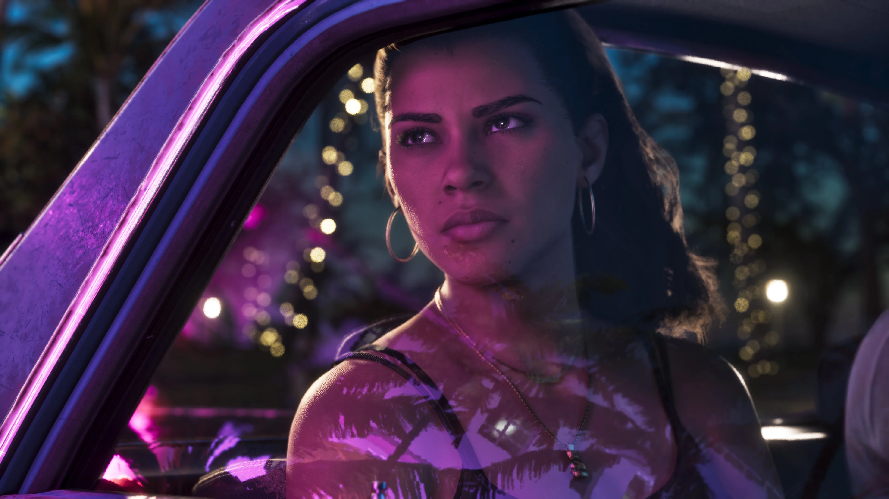
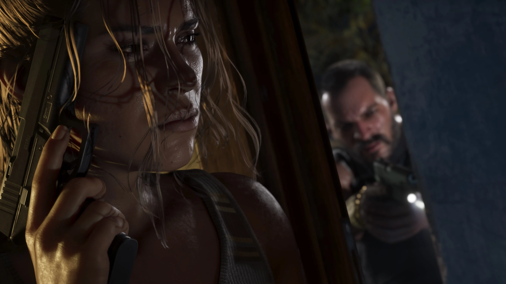
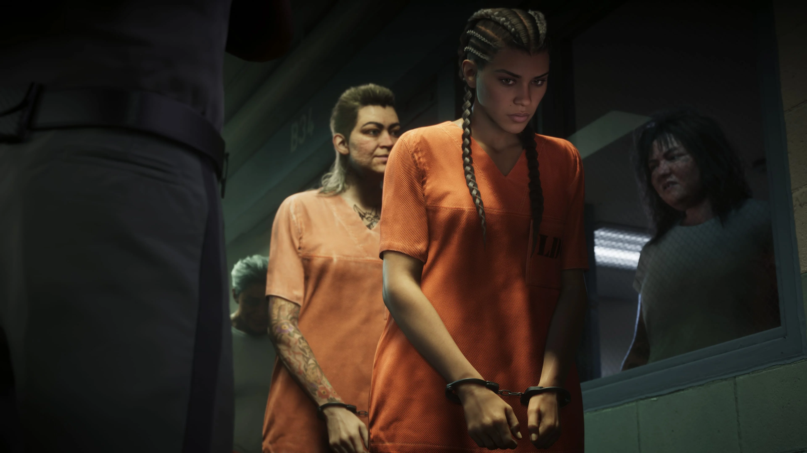

Jason Duval
Jason divide com Lucia o centro da história apresentada para GTA VI. Quando um serviço dá errado, os dois precisam depender um do outro para tentar escapar da conspiração em que foram envolvidos.
Conhecer Jason
Lucia Caminos é uma das protagonistas de Grand Theft Auto VI. Seu pai ensinou-a a lutar desde muito jovem, e lutar pela família acabou levando-a à Penitenciária de Leonida.
Depois de sair da prisão graças a um golpe de sorte, Lucia decide que dali em diante precisa fazer movimentos mais inteligentes. Ao lado de Jason Duval, ela acaba envolvida em uma conspiração criminal que atravessa o estado de Leonida.
O pai de Lucia ensinou-a a lutar desde que ela era muito pequena. Segundo sua apresentação oficial, a vida continuou testando-a desde então.
Lutar pela família acabou levando Lucia à Penitenciária de Leonida. Um golpe de sorte permitiu que ela saísse, mas a experiência mudou a forma como pretende seguir em frente.
Lucia quer a boa vida que sua mãe sonhava desde os tempos em Liberty City. A diferença é que ela não pretende depender apenas de fantasia ou sorte: está decidida a agir e seguir seu próprio plano.

Antes dos acontecimentos centrais apresentados para GTA VI, Lucia esteve presa na Penitenciária de Leonida.
A Rockstar explica que lutar pela família foi o que acabou levando-a até lá e que a sorte foi determinante para sua saída.
Livre novamente, Lucia está pronta para tentar mudar as probabilidades a seu favor. A personagem aparece comprometida com seu plano, independentemente do que seja necessário para levá-lo adiante.
Lucia e Jason formam a dupla central da história apresentada para Grand Theft Auto VI.
Depois que um serviço aparentemente simples dá errado, os dois vão parar no lado mais sombrio do lugar mais ensolarado dos Estados Unidos.
A situação os coloca no centro de uma conspiração criminal que se estende por Leonida e força os dois a depender um do outro mais do que nunca para conseguirem sair vivos.
A própria apresentação de Lucia sugere que uma vida com Jason pode representar uma saída para a personagem, sem revelar ainda como essa relação vai evoluir.
Conhecer Jason Duval
Lucia não quer simplesmente voltar à vida que tinha antes da prisão. Sua apresentação oficial deixa claro que ela pretende mudar sua situação.
O objetivo é alcançar a boa vida que sua mãe sonhava desde os tempos em Liberty City.
Para Lucia, isso significa agir com mais inteligência e tomar o controle das próprias decisões. Recém-saída da prisão, ela aparece determinada a seguir seu plano e mudar as probabilidades a seu favor.

Relações mencionadas diretamente nos materiais oficiais da personagem.
Jason divide com Lucia o centro da história apresentada para GTA VI. Quando um serviço dá errado, os dois precisam depender um do outro para tentar escapar da conspiração em que foram envolvidos.
Conhecer JasonO pai de Lucia ensinou-a a lutar desde muito cedo, uma informação destacada pela Rockstar na apresentação oficial da personagem.
Lucia busca a boa vida com a qual sua mãe sonhava desde os tempos em Liberty City, objetivo que ajuda a explicar suas ambições para o futuro.
Seleção de screenshots oficiais de Lucia Caminos publicados pela Rockstar Games.
Esta área reúne apenas informações apresentadas oficialmente para a personagem.
Lucia é uma das personagens centrais de GTA VI ao lado de Jason Duval.
Lucia esteve presa na Penitenciária de Leonida.
Lutar pela família foi o que acabou levando Lucia à prisão.
O pai de Lucia ensinou-a a lutar desde muito jovem.
Sua mãe sonhava com uma boa vida desde os tempos em Liberty City.
Lucia e Jason precisam depender um do outro após um serviço dar errado.
As informações e imagens desta página são baseadas em materiais oficiais publicados pela Rockstar Games.
Página oficial que apresenta Lucia Caminos, sua história, objetivos e relação com Jason Duval.
Ver perfil oficialBiblioteca oficial de mídia da Rockstar Games, que inclui screenshots identificados como Lucia Caminos e também imagens de Jason e Lucia.
Ver screenshots oficiais